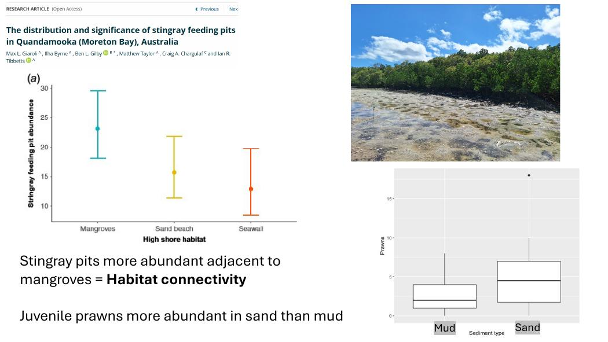

Coastal Ecosystems
Quandamooka and Minjerribah / Exam guide
Start here
The five explanations to practise
Runoff → underwater light → seagrass. Separate sediment, nutrients and salinity; explain why losses can persist after a flood.
Habitat connections → juvenile survival. Trace a tide across mangroves, ray pits and seagrass; do not confuse occupancy with recruitment.
Feeding flats + roosts → migration fuel. Explain why both stages of the tidal cycle matter.
Warmer margins ≠ guaranteed coral refuges. Follow arrival, establishment and persistence through extremes.
Observation ≠ mechanism. Explain what a receiver detection, animal count or chlorophyll reading actually measures.
Lecture guide
- Exam and course scope
- Quandamooka and Minjerribah
- Seagrass: light, habitat and carbon
- Mangroves, saltmarsh and ray pits
- Shorebirds: the full tidal cycle
- Sharks and rays: ecology and tracking
- High-latitude reefs: opportunity and limits
- Marine mammals: exposure and recovery
- Human impacts and interacting pressures
- Plankton: production, grazing and blooms
- Water quality: from catchment to bay
- Oysters: project case, not an extra lecture
Lecture notes
Exam and course scope
The intro slides specify a two-hour online theory exam worth 50%, a field workbook worth 20%, and a Special Topics Project worth 30%. The exam has 33 multiple-choice or true/false items and three short answers chosen from five topics. The practice below mirrors the structure; its topics are not an official forecast.
For a short answer, name the driver, explain the intervening process, then give a course example and a limitation. For instance, do not stop at “runoff harms seagrass”: show how suspended sediment reduces light and how recovery depends on whether the sediment clears.
Source: 1_Introduction to CE Course.pdf
Lecture notes
Quandamooka and Minjerribah
Quandamooka (Moreton Bay) is a connected coastal system on Quandamooka Country. Minjerribah (North Stradbroke Island) is a sand island that helps shelter the bay, while tidal entrances connect it to the ocean. River inflows and marine exchange vary across the bay, so conditions at the Eastern Banks cannot stand in for river-influenced western waters.
Follow a juvenile fish or prawn through the landscape: shallow flats, seagrass and mangrove edges can provide different feeding and refuge opportunities as tides change. Protecting one patch cannot replace access between patches. Quandamooka custodianship is ongoing; colonial land use and sand mining belong in the ecological history rather than being treated as separate from it.
Source: 2_Quandamooka and Minjerribah ecology and history.pdf
Lecture notes
Seagrass: light, habitat and carbon
Seagrasses are flowering plants, not seaweeds. Leaves intercept light, roots anchor and take up resources, and horizontal rhizomes allow a meadow to spread. Low underwater light reduces photosynthesis. Flood sediment, phytoplankton and epiphytes can all reduce available light, but by different routes.
A meadow slows water and traps particles; its roots and rhizomes help stabilise sediment. Losing meadow cover can make sediment easier to resuspend, reducing light and slowing recovery. Leaves provide shelter for small animals and food for dugongs and some turtles. Sediment stores carbon from the meadow and elsewhere: standing carbon stock, burial rate and avoided emissions are different measurements.
An isolated post-flood survey cannot distinguish death, seasonal dieback and slow regrowth. Compare sites and repeated observations of cover, light and sediment, and look for recruitment or rhizome expansion before calling it recovery.
Source: 3_Seagrass ecology.pdf
Lecture notes
Mangroves, saltmarsh and ray pits
Tides create alternating access and stress. Mangrove roots face oxygen-poor sediment; exposed aerial roots can exchange gases. Saltmarsh plants tolerate saline conditions and periodic flooding. Both can slow water and trap sediment. If sea level rises, persistence depends on elevation gain or landward migration; seawalls can block migration and cause coastal squeeze.
Ray foraging excavates pits. On an exposed flat, depressions retain water and provide temporary habitat for juveniles. The lecture compares pit abundance and juvenile prawns across habitats: pits were more abundant near mangroves, prawns more abundant in sand than mud, and the smallest juveniles occurred in pits in the habitat comparison. This is why bare-looking sediment can matter to fisheries.
Water retention does not guarantee thermal refuge: the lecture reports pit water reaching 41–42 °C during one hot observation, near the reported juvenile prawn critical thermal limit. Dark mud absorbs more sunlight than lighter sand; depth and access to cooler sediment also matter. Juvenile density supports habitat use, but survival and export to adult populations would strengthen a nursery claim.

Source: coastal wetlands of MBay ray pits.pdf
Lecture notes
Shorebirds: the full tidal cycle
Many shorebirds feed on exposed intertidal sediment at low tide, then move to high-tide roosts. Bill shape and feeding behaviour affect which prey they can reach. A large feeding flat is insufficient if birds cannot rest nearby when it floods.
Repeated disturbance costs more than the energy of a single flight: it can also reduce feeding time and force longer trips between food and roosts. For migrants, failure to accumulate fuel can affect subsequent migration. A flyway links breeding, stopover and non-breeding sites; losing a stopover can have consequences far beyond the bay.
Compare standardised counts at comparable tides and seasons. A low count on one flat might reflect displacement to another site, not mortality. Record disturbance, time spent feeding and availability of alternative roosts to test mechanisms.
Source: 5_Ecology of Shorebirds.pdf
Lecture notes
Sharks and rays: ecology and tracking
Elasmobranchs are sharks and rays. The ecological role depends on the species: a benthic ray can modify sediment while foraging, while a mobile shark may connect habitats. Slow growth and low reproductive output in many species can make losses hard to replace; do not assume identical life histories.
Acoustic tags transmit coded signals that receivers detect within range. A detection establishes presence near a receiver, not a continuous path. Non-detection could mean absence, poor reception or tag failure. Satellite tags that need to transmit at the surface are limited by surfacing behaviour. Combining methods can resolve different scales of movement.
To argue for a nursery, distinguish juvenile presence from repeated use and prolonged residence. Track individuals over time, compare alternative areas and account for receiver coverage before inferring habitat preference.
Source: Elasmobranch research in east australia.pdf
Lecture notes
High-latitude reefs: opportunity and limits
High-latitude reefs occur near cooler margins of coral distributions. Warming can relax winter temperature constraints, but a range shift also needs larvae to arrive, settle, survive and reproduce. Light, substrate, competing organisms and extreme events can block establishment. Finding a coral poleward of its usual range does not show that a self-sustaining reef has formed.
Coral symbionts provide photosynthetic products; suspended particles reduce light and deposited particles can cover tissue. Floods can simultaneously lower salinity, so poor coral condition after a flood does not identify sediment as the sole cause. Separate salinity and sediment treatments in experiments, and distinguish survival, bleaching and calcification as outcomes.
The possible benefit of milder winters does not make high-latitude reefs immune to heatwaves. A refuge claim needs evidence of persistence through extremes as well as suitability on average.
Source: 7_Ilha_lecture_HighLat_Reefs_Stanford_2026_final.pdf
Lecture notes
Marine mammals: exposure and recovery
Do not lump all marine mammals into the same food web. Dugongs depend on seagrass; coastal dolphins hunt prey and can use different parts of the bay. Losing a meadow directly removes dugong food, while a dolphin can be affected indirectly through changes to prey or movement.
Distinguish habitat degradation from direct threats such as vessel strikes and entanglement. Protect feeding habitat and manage vessel overlap; one intervention cannot solve both mechanisms. Slow reproduction makes continued loss of breeding adults consequential.
Sightings reflect detectability as well as abundance: effort, sea conditions and surfacing affect counts. Repeated comparable surveys or photo-identification are more informative than comparing raw sightings from unequal trips.
Source: 9_Coastal Marine Mammals.pdf
Lecture notes
Human impacts and interacting pressures
Separate a pressure from its mechanism: catchment clearing and development can increase runoff; dredging or vessel activity can disturb sediment; warming and sea-level rise change exposure and available habitat. An acute flood pulse acts on habitats already shaped by chronic pressures.
A marine park can manage activities within its boundaries, but cannot stop sediment arriving from upstream. Match action to scale: reduce catchment inputs, protect and reconnect habitat, manage local vessel exposure and address warming separately. Compare outcomes, not just the area designated or money spent.
Source: 10_Human Impacts on Quandamooka and Minjerribah.pdf
Lecture notes
Plankton: production, grazing and blooms
Plankton drift with currents. Phytoplankton photosynthesise; zooplankton include consumers and larvae. Holoplankton remain planktonic through life, while meroplankton spend only a stage there. A bloom occurs when growth exceeds losses to grazing, sinking, mortality or transport.
Nutrients may stimulate production if they are limiting and there is enough light. Dense blooms can shade bottom plants; decomposition of organic material can consume oxygen. Not every bloom is toxic, and low oxygen is not evidence of a toxin.
A coarse net under-samples smaller plankton. A water sample, microscope count, pigment measurement and net tow answer different questions. Chlorophyll is a proxy for photosynthetic biomass, not a direct count or identification of a harmful species.
Source: 11_Australian Plankton.pdf
Lecture notes
Water quality: from catchment to bay
A flood moves freshwater, sediment, nutrients and contaminants into the bay. Currents and mixing control where the plume goes, and salinity, turbidity and nutrient effects need not peak in the same place or at the same time. High turbidity can occur without a bloom; a bloom can follow after sediment settles and light returns.
Compare river-influenced sites with clearer marine-influenced sites before, during and after events. Measure rainfall/discharge, salinity, turbidity, light, nutrients, chlorophyll and dissolved oxygen alongside habitat responses. Keep tide and sampling depth comparable. A before–after change without a comparison can confuse flood effects with seasonal changes.
Catchment erosion control targets sediment supply; wastewater improvements target a different source and may reduce nutrients. Choose indicators that show the intended pressure fell and the habitat actually recovered.
Source: 11_Quandamooka Water quality.pdf
Supplement
Oysters: project case, not an extra lecture
The supplied oyster PDF is project material. Use it as a case for comparing food production, reef restoration and care for Country, not as a source of independently verified exam statistics.
Oysters filter particles and create hard, complex habitat when reefs form. Shell provides settlement substrate, but returning shell is not by itself proof of restoration. Check settlement, juvenile survival, persistence and habitat use against a comparison. Consider biosecurity and water quality, and distinguish farm production from wild reef recovery.
Source: Oyster Farming.pdf
Practice / Choose three
Five synthesis questions
These are practice prompts, not known exam questions.
1. How can catchment runoff cause seagrass decline and delay recovery?
Check model answer
Runoff carries suspended sediment that scatters and absorbs light before it reaches leaves. Nutrients can separately stimulate plankton or epiphytes, increasing shade. If photosynthesis stays too low, plants draw down reserves and cover can decline. Once roots and rhizomes are lost, sediment can resuspend more readily, so the original flood plume need not still be present for light to remain poor. Compare repeated measurements of light, turbidity and meadow cover at plume-exposed and less exposed sites; track new growth to test recovery.
Water quality: from catchment to bay · Seagrass: light, habitat and carbon
2. Why protect unvegetated tidal flats as well as mangroves and seagrass?
Check model answer
The flat itself provides habitat. Stingray feeding pits hold water at low tide and the lecture found small juvenile prawns using them, particularly in sandy settings. Meanwhile, exposed sediment gives shorebirds access to buried prey before they move to high-tide roosts. Removing or degrading the flats can therefore break two different processes even if vegetated patches survive. Pit occupancy is evidence of use, not proof that the pits export more surviving adults; compare juvenile survival and later recruitment.
Mangroves, saltmarsh and ray pits · Shorebirds: the full tidal cycle
3. Can high-latitude reefs act as climate refuges? Explain the evidence you would need.
Check model answer
Potentially. Warmer winters may improve survival at a cool distribution margin, but larvae must reach suitable substrate and reproduce there, and populations must persist through heatwaves and local stress. A flood can combine sediment deposition, reduced light and low salinity. A newly recorded colony shows arrival or survival to detection, not a functioning refuge. Track settlement, survival and reproduction across years and extremes, and compare sites with different exposure.
High-latitude reefs: opportunity and limits · Water quality: from catchment to bay
4. How would you distinguish habitat use from an artefact of sampling in a mobile animal?
Check model answer
For an acoustically tagged ray, more detections near seagrass could reflect either more time spent there or better receiver coverage. Place comparable receivers across habitat types, test detection range under relevant conditions, and follow multiple individuals across tides and seasons. Analyse repeat visits and residence after accounting for coverage. Missing detections alone are not evidence of absence. The same logic applies to dolphin surveys: compare effort and sea conditions before interpreting differences in sightings as abundance changes.
Sharks and rays: ecology and tracking · Marine mammals: exposure and recovery
5. Why is protecting individual habitat patches insufficient in Quandamooka?
Check model answer
Species depend on linked habitats and pressures cross boundaries. A shorebird needs an exposed feeding flat and a reachable high-tide roost; protecting only one can leave it without usable habitat for part of each day. Juvenile fish and prawns can also use different habitats as tides and life stages change. Protect connections and complementary patches, manage disturbance and address upstream sediment or nutrient sources. Evaluate actual feeding access, habitat condition and recovery rather than counting hectares protected.
Quandamooka and Minjerribah · Shorebirds: the full tidal cycle · Human impacts and interacting pressures
Practice / 33 objective items
True or false?
The real exam mixes multiple choice and true/false; these are true/false retrieval checks.
1. Seagrasses are flowering plants.
True. Roots, rhizomes and flowering distinguish them from seaweeds.
2. Low salinity and sedimentation are the same flood stressor.
False. Freshwater dilution and particle deposition are different mechanisms.
3. Meadow loss can make sediment easier to resuspend.
True. Loss of roots and flow baffling can reinforce turbidity.
4. Carbon stock measures annual carbon burial.
False. Stock is an amount; burial is a rate.
5. A bay-wide mean can hide river-to-ocean gradients.
True. Marine exchange and river plumes are uneven.
6. Marine park boundaries prevent upstream runoff.
False. Catchment sources require catchment action.
7. High-tide roosts can limit shorebird habitat use.
True. Birds need accessible places to rest when flats flood.
8. A single low count proves mortality.
False. Displacement or detectability can change counts.
9. Disturbance can reduce both feeding time and energy reserves.
True. Flight costs and lost foraging both matter.
10. A migration stopover can affect birds far beyond the site.
True. The next leg depends on sufficient refuelling.
11. Ray pits retain water when adjacent flats expose.
True. The depressions can provide temporary juvenile habitat.
12. All ray pits remain cool on hot days.
False. Shallow retained water can heat strongly.
13. Juvenile density alone proves adult recruitment.
False. Survival and contribution to adults need evidence.
14. Sea walls can cause coastal squeeze.
True. They can prevent wetland migration landward.
15. Mangrove roots can face oxygen-poor sediment.
True. Aerial root structures can help gas exchange.
16. An acoustic detection is a continuous track.
False. It is a detection in receiver range at a particular time.
17. Receiver coverage matters when inferring habitat use.
True. Areas with more coverage may yield more detections.
18. Failure to detect a tag proves absence.
False. Detection failure or tag loss can also explain it.
19. All sharks and rays play the same ecological role.
False. Species differ in diet, movement and habitat modification.
20. A poleward coral sighting proves reef establishment.
False. Recruitment, survival and reproduction must persist.
21. Milder winters can help some corals at cool margins.
True. This can relax cold constraints without removing other limits.
22. A flood experiment can separate salinity from sediment effects.
True. Vary each independently with appropriate controls.
23. Dugongs and coastal dolphins have the same diet.
False. Dugongs graze seagrass; dolphins hunt prey.
24. Vessel management and meadow restoration address different threats.
True. Direct exposure and food availability require different interventions.
25. Raw mammal sightings are unaffected by sea conditions.
False. Sea state changes detectability.
26. Meroplankton are planktonic for only part of life.
True. Many benthic animals have drifting larvae.
27. All plankton are photosynthetic.
False. Zooplankton include consumers.
28. Every bloom is toxic.
False. High biomass and toxin production are distinct.
29. Decomposition following a bloom can consume oxygen.
True. Microbial respiration draws down dissolved oxygen.
30. Coarse nets sample the smallest plankton efficiently.
False. Small organisms can pass through the mesh.
31. Chlorophyll identifies the species causing a bloom.
False. It is a pigment proxy, not a species identification.
32. Tide and depth can confound water-quality comparisons.
True. Compare like sampling conditions or explicitly model differences.
33. Returning oyster shell guarantees lasting reef recovery.
False. Settlement, survival and persistence must be demonstrated.